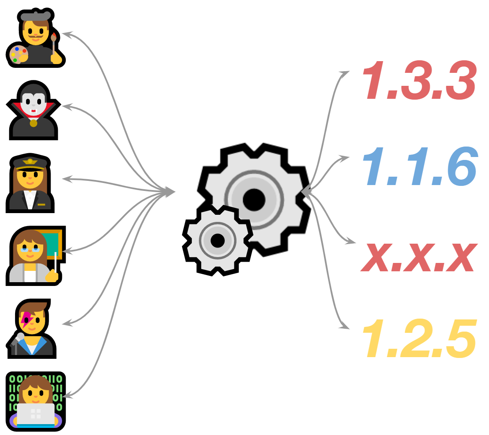
Recently our team released a new desktop application product offering, Grammarly for Windows and Mac, which we've been working on for some time now. It’s a desktop application that provides writing assistance in the browser and on many of the most popular desktop apps like Microsoft Office, Slack, or Discord.
One of the challenges with this project was how to deploy this complex application to millions of users. We wanted to make sure each user got the right version, since they might be using a newer or older operating system and we frequently run A/B tests to do data-driven product development. We also wanted to make sure we could push updates without any delay.
For Windows, we solved this by migrating and modifying code that we wrote to deploy Grammarly for MS Office about a year ago. While working on that code, I thought it would be interesting to share how we built our deployment system, which involved writing our own query language and our own parser and interpreter for that language (and it was nowhere near as hard as it sounds!). Really, it’s a story about how F# and functional programming can help solve complex problems efficiently and in creative ways.
In case this content looks familiar, it’s a condensed version of a talk I gave at F# Ukraine :)
Background: Application code deployment
To give more context around what the problem is, we need to travel to the land of application code deployment. Let’s first look at what it’s like to deploy on the server vs. the client to give a sense of the differences and challenges on both sides.
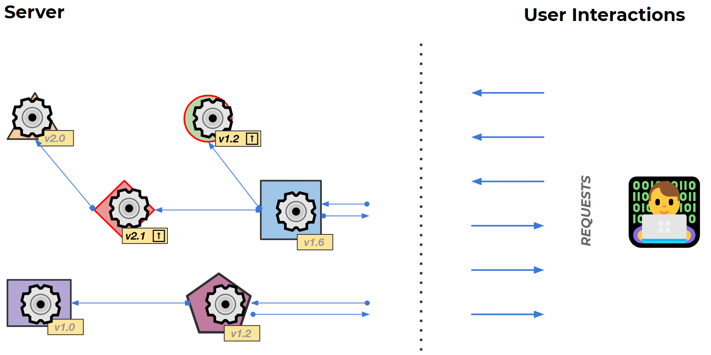
We can imagine a complex web of interconnected (micro)services, each with its own specific version of the application deployed. If we want to update one of the versions on one of the servers, we can do this relatively easily by deploying a new version of the code or a bug fix to machines that we own. But we do have to answer some complex questions around how the new code will work with other services, what the downtime may be, DB migrations, etc.
Even though the problems to solve on the server side are quite complex, there are some robust solutions for service code deployment. On the other hand, there are few options for desktop applications to manage their version for users. Adding to the complexity is the fact that the executables are located on the users’ machines, and it's not as easy to quickly push a new version or bug fix as it is on our servers.
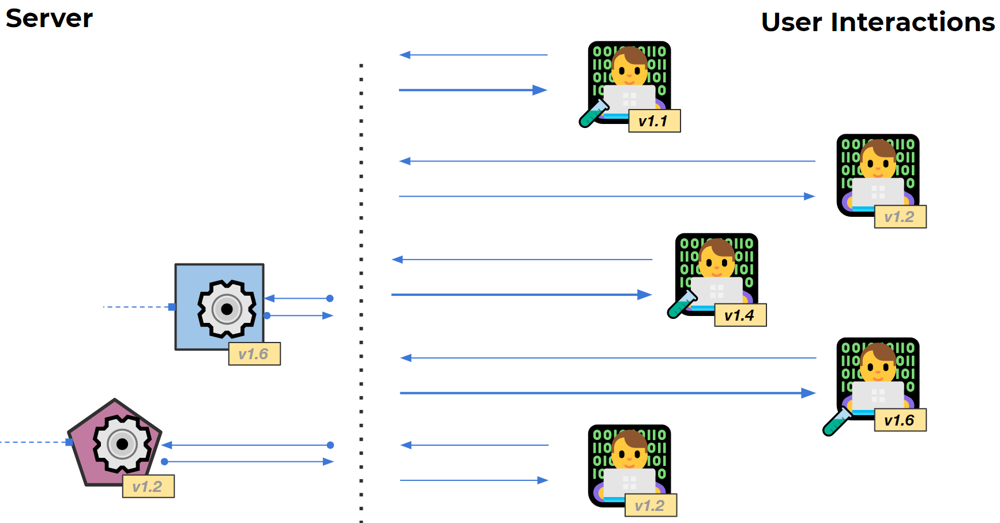
We also have a complex list of rules and conditions that we’d like to put into place to determine which user should get which version of the application. This might be based on whether they have a newer or older operating system, are part of a certain A/B experiment, and so on.
Given this setup, how should we make sure that the right version of the application is always pushed to the right user in an efficient manner?
The solution: Make dynamic deployment decisions on the server
By making deployment decisions on the server rather than the client, we’re able to dynamically match the right version with the right client based on their current context. And we stay flexible for adding more rules and conditions in the future.
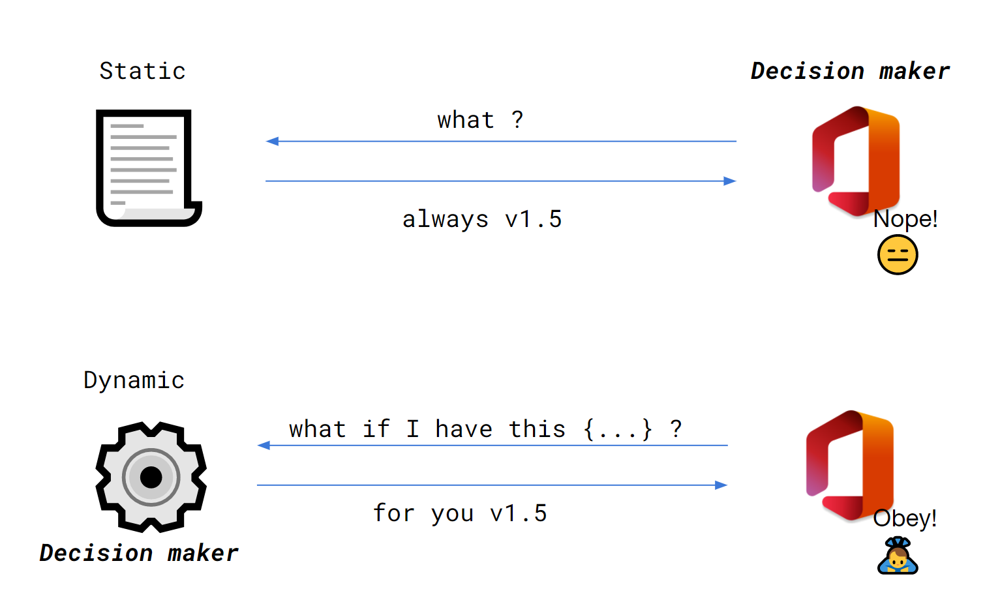
The decision itself would be based on a user’s context, e.g., their Grammarly identifiers or experiments they are participating in, or other limited environment data that can be helpful to give a better user experience.
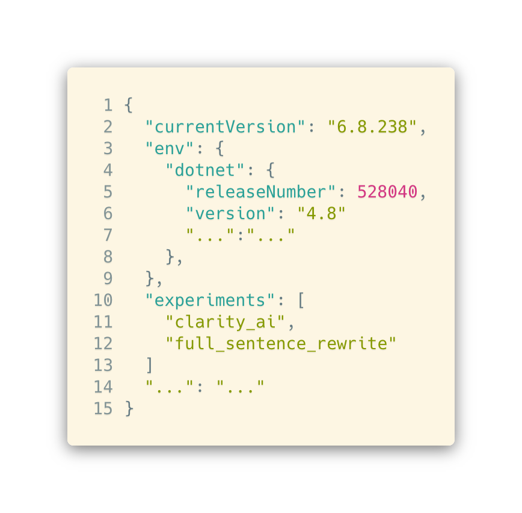
By having this context and matching it with our expectations, we can do an actual configuration of which version should go to which user.
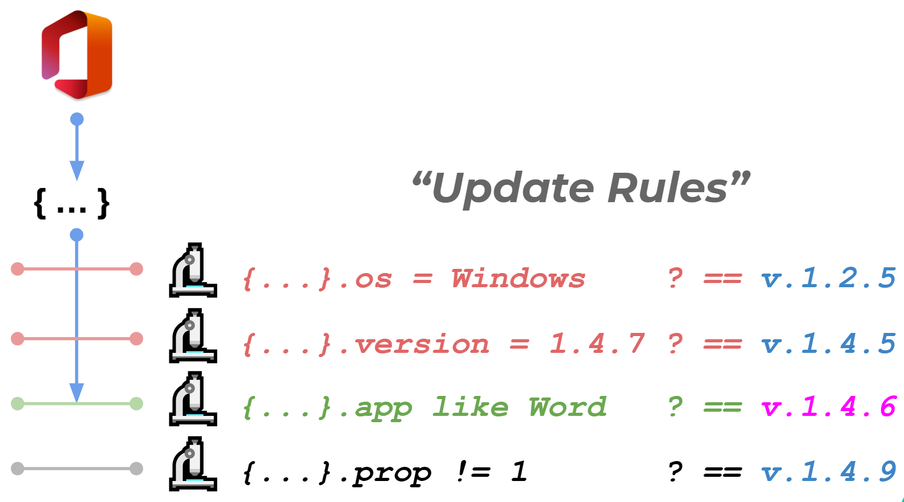
Why we built our deployment system in-house
Once we’d identified what type of system we needed, the obvious first step was to look into existing solutions and see if we could find something that fit our needs. After researching, we concluded that each existing option missed one or more of our key requirements for a variety of reasons:
It statically forced the version, with no dynamic decision based on client context
Decision-making happened on the client, not the server
The source code was closed and non-extensible, so we couldn’t add required functionality
Therefore, we decided to design our own lightweight deployment solution.
One of our key requirements was to have a highly flexible way to specify the conditions under which we should deliver a particular version to a specific user. After considering other less viable options, we chose to design our own context-matching domain-specific language (DSL) for this purpose.
Designing a DSL for JSON matching
But why did we need a special domain language? Why couldn't we have just used our favorite programming language to encode our deployment rules? Well, we could have, but we might have run into a few problems:
Each rule change would require a code deployment and some downtime
A general-purpose language, while it does provide plenty of flexibility, introduces more ways for us to do something wrong
Usually, it's harder to read an encoding in a general-purpose language vs. a DSL (as an analogy, imagine configuring SQL requests in code instead of writing SQL queries directly)
So, we decided to design a simple domain-specific language that would cover all our requirements. This is how Update Rules was born. It’s a DSL that lets us match rules on JSON context data from the client and outputs the correct application version number.
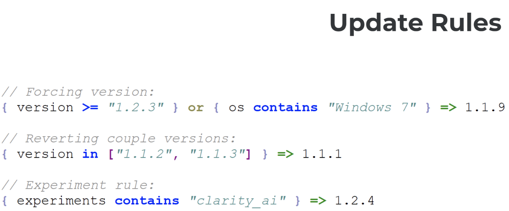
Before we started developing our Update Rules DSL, we first defined a few basic requirements around its syntax.
Fields
First of all, we wanted our DSL to be as intuitive to use as possible, which meant that specifying fields should work like it does in JSON. We decided to place fields inside curly braces and use periods to match nested fields, giving developers the impression that they’re simply accessing regular JSON object fields.
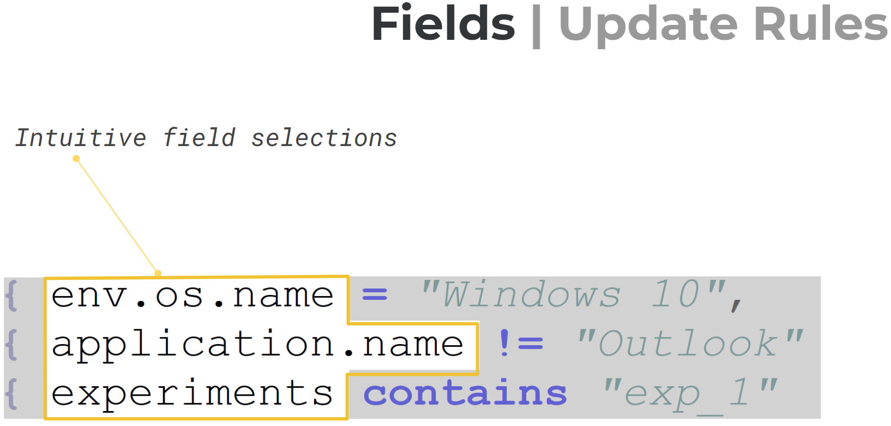
Literals
As for literals, no exotic types were needed here, just the plain and simple data types that JSON supports: String, Number, Boolean, and arrays of those types.
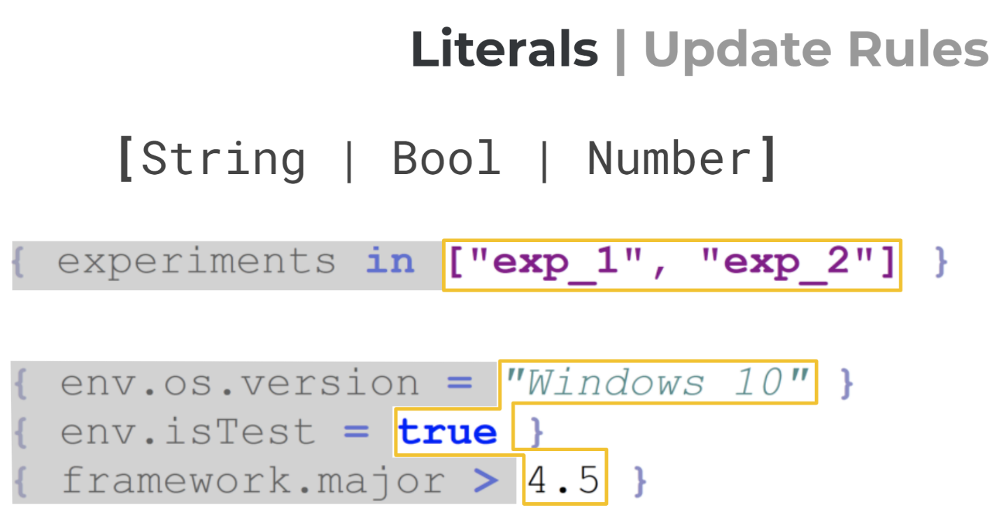
Conditions
To create our logic around dynamic versioning, we needed to define some conditional operators to apply to incoming data.
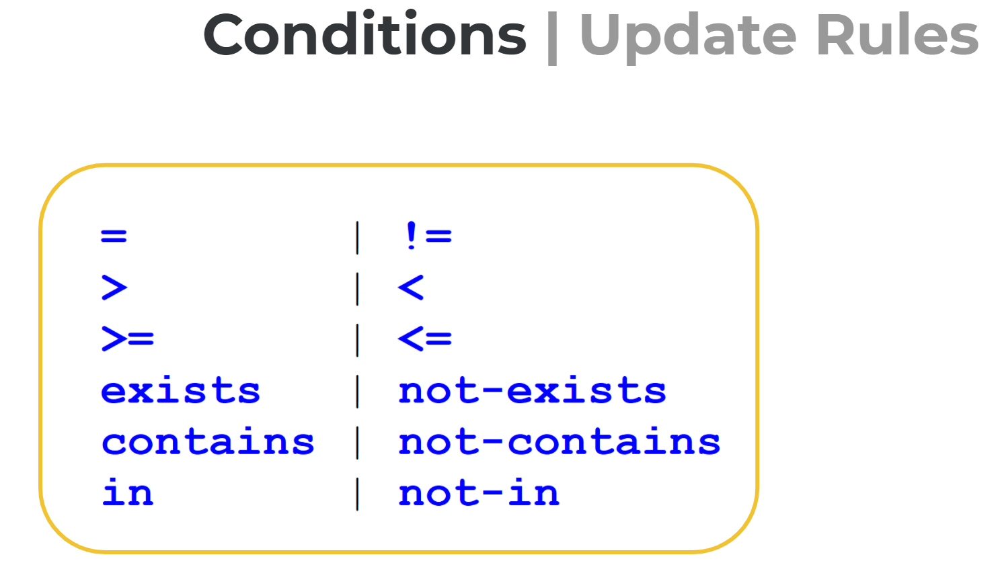
We have the basic comparison operators you find in any language, as well as specific operators like contains, exists, and in. For our DSL we also wanted to change some semantics:
Comparing everything
Even though not all operators are defined on every type (mathematically speaking), for flexibility reasons we wanted to relax this restriction by defining special comparison rules for strings, booleans, integers, and arrays.
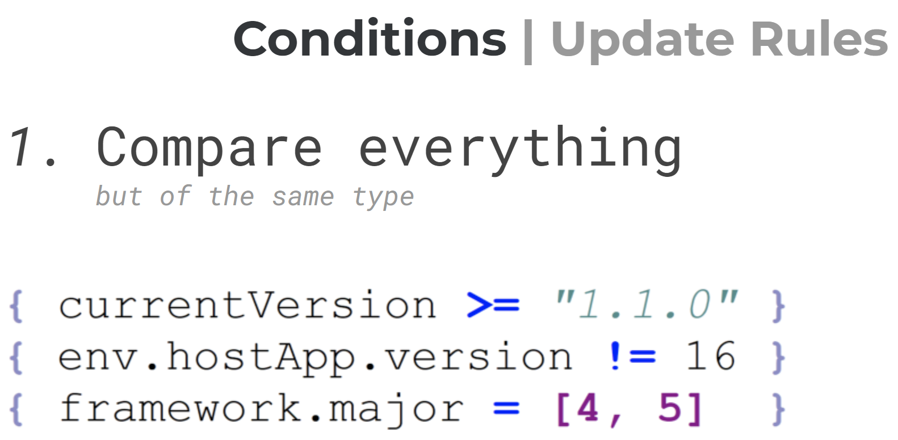
Containability
We also needed to be able to check if some elements are part of another—for example, if a field is a substring of another string, or an array contains a literal.
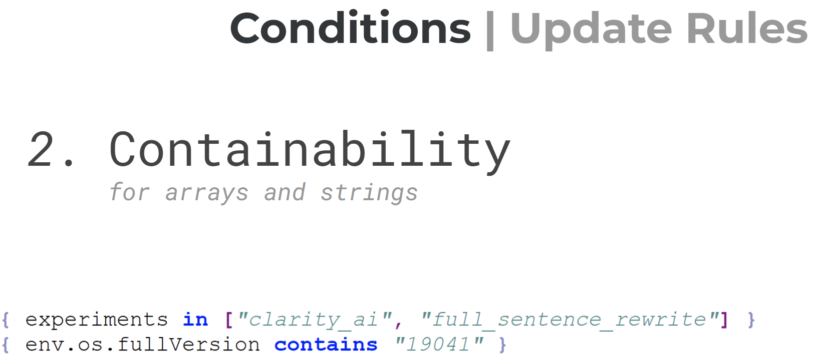
Presence
Finally, we needed to be able to easily determine if a field was present at all in the JSON context data.
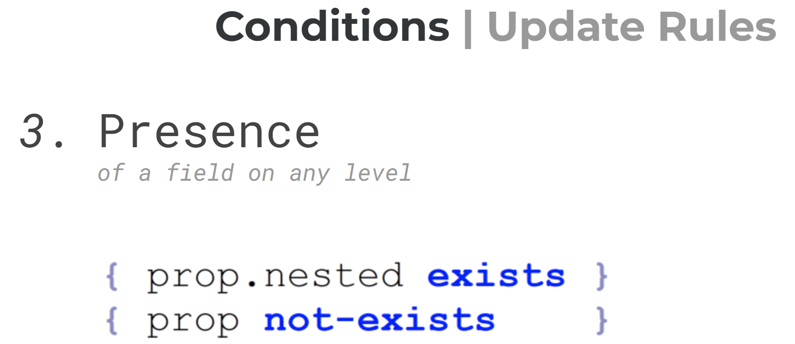
Combinations
Any conditional logic would be incomplete without ways of combining conditions, so here we have AND and OR boolean combinators to be able to configure our matching more precisely.
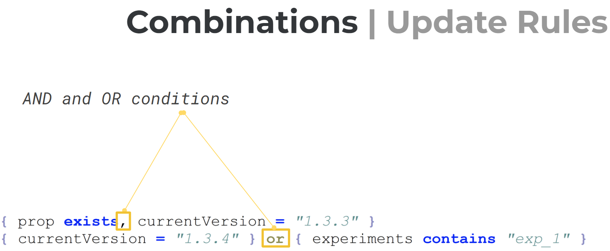
Outcome
Once we have our conditions in place, we can specify what exactly we're expecting as a result: Given a context, we can define what application version users should receive.
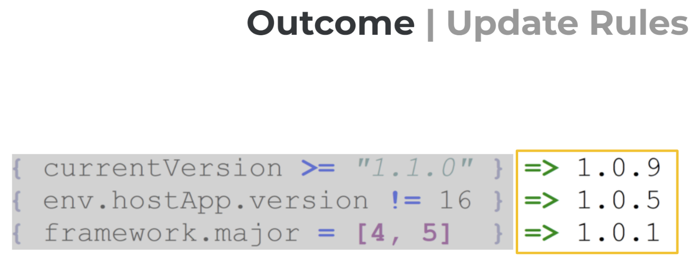
Parsing, matching, and deciding
You might naturally be skeptical of this entire idea so far. After all, even if you’ve designed a handy DSL for your use case, you still need to be able to parse and interpret it—which can seem like quite a task. But here’s where F# and FParsec come into play, making things much easier.
FParsec is a special parsing library called a parser combinator library. Although that might sound scary, it actually just means that we have a collection of various parsers in the library as well as many ways (functions) to combine them. So, basically, F# has an embedded DSL (oh my, DSLs again) for parsing DSLs…and other structured things as well. Parser combinators are a powerful technique for building parsers in a way that’s well-defined and easy to grasp. It looks very much like transferring EBNF-like language grammar into F# code, with all the benefits of a strongly-typed functional programming language. My hope here is to show you that it's actually quite easy to parse any structured data or simple programming language. Parser combinators are significantly easier to understand than regexes, for example—and they’re capable of parsing XML :)
Rule structure
Before writing any code, we used EBNF-like notation to document our Update Rule structure in a compact, readable form. It gives us a sort of cheat sheet to look at when coding parsers so we can have a better understanding of what some particular rule substructure is looking like.
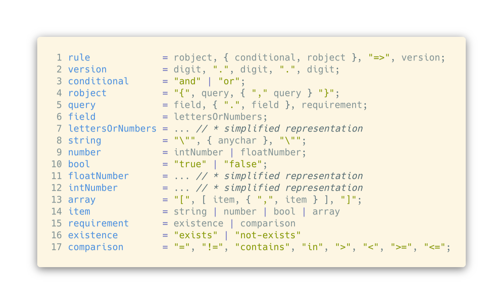
Domain types
Now that we know what our rules should look like, it's time to actually do some coding. With a language as strongly typed as F#, it's always a good idea to start with encoding invariants within domain types.
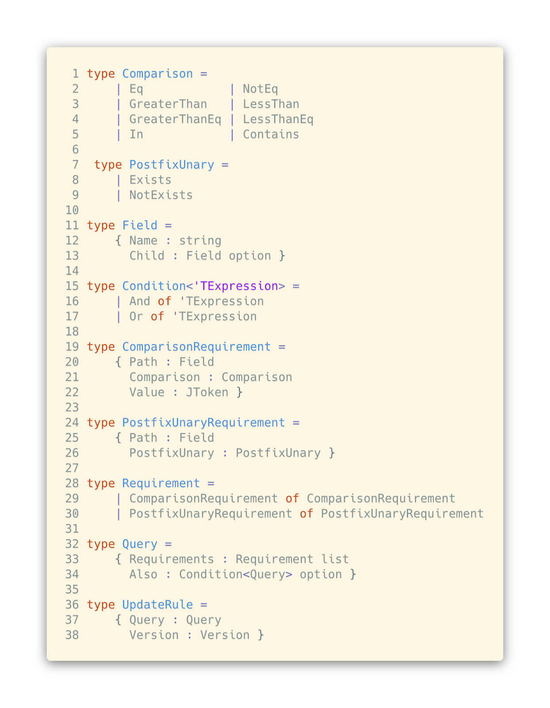
If we look closer, we can notice that the most important parts of the domain nicely reflect the structure of our EBNF specification.
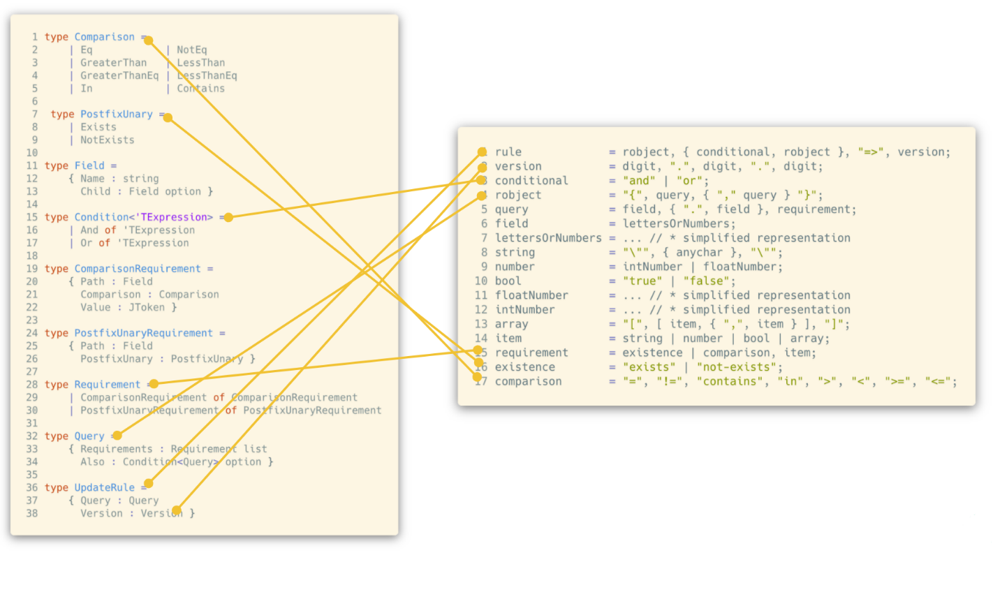
Parser combinators
Before going any deeper, we need to familiarize ourselves with the basic concepts of the FParsec library: parsers and combinators. Here’s the definition from Wikipedia: “In computer programming, a parser combinator is a higher-order function that accepts several parsers as input and returns a new parser as its output.”
That definition doesn't say much, but what it says is plenty for us to build an intuition for what’s going on. A combinator is just a function that takes two or more things and combines them in a particular manner. In our case, those things are text parsers. In a moment, I’ll explain a few ways of performing those combinations.
As for parsers, the basic definition is a function that transforms less structured data (like text) into more structured data (like integers). The FParsec library adds some more implementation details to the concepts of combinators and parsers, but the fundamental meanings stay the same.
FParsec library
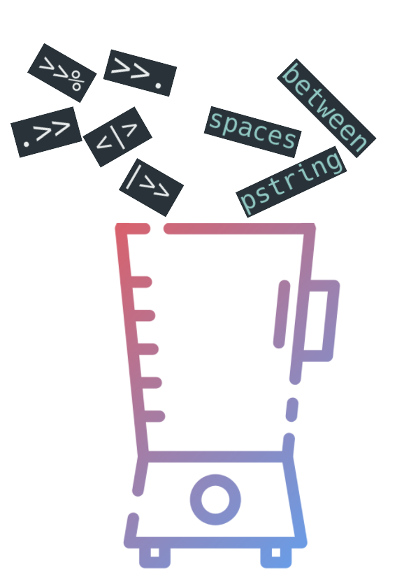
Parsec is a family of parser libraries in functional programming languages that first originated in Haskell. Though the implementation differs, the API is similar for each. These kinds of parsers are fairly simple to use in your preferred programming language without any additional configuration. Yet they are powerful enough to parse quite complex grammars (even parsing programming languages) and other structured text.
Looking at FParsec in particular, here are some functions that you can use to build more complex parsers:
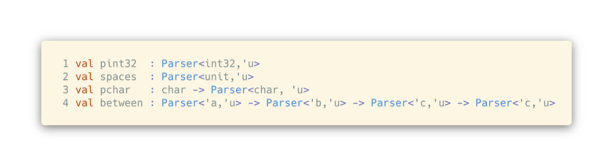
The first two are simple parsers that move through the text and parse integer or spaces correspondingly. pchar is simply a parser constructor (or factory) that takes a character to parse and returns a configured parser. And the last one, between, is a parser combinator. It takes two bracketing characters and pushes into its middle parser everything in between.
If we look closer at the definition of the Parser type, it's just a function that takes a stream of characters and returns the result, failure or success, depending on the parsing outcome.
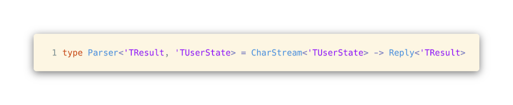
To build more intuition around what it looks like to do parsing with these primitives, we can look at this example:
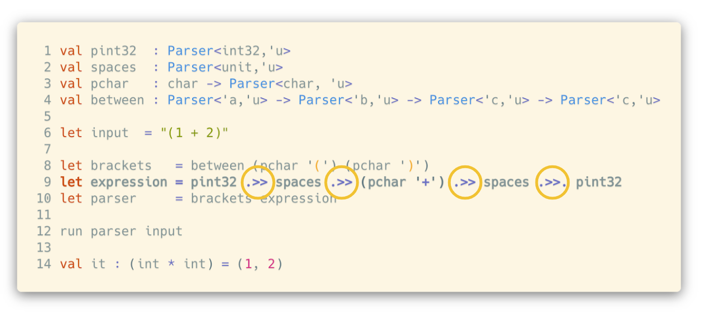
Here we have a simple expression: (1 + 2), adding two numbers inside parentheses. We want to parse those two numbers into a tuple. To do so, we're using the library functions mentioned earlier and building a single parser by combining other, simpler parsers. In the highlighted row, we're constructing the main part of the parser. Without going deeper into what exactly is going on yet, we can see the general structure: parsing integer -(then)-> parsing spaces -(then)-> parsing character "+" -(then)-> parsing spaces -(then)-> parsing integer.
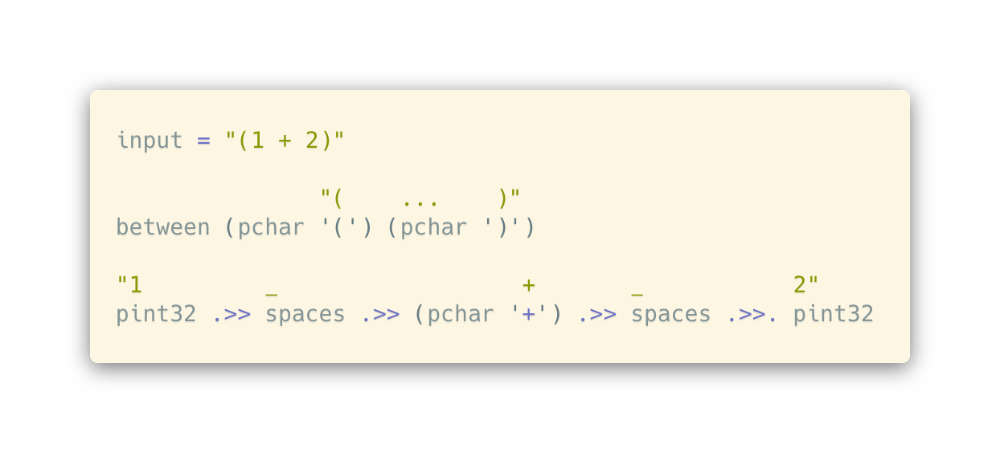
On top of this, we also need to specify that the addition expression is enclosed inside parentheses. To do so, we're using between, which you may recall is a parser combinator that can return a parser for text enclosed inside starting and ending symbols. In this case, the starting and ending symbols are the open and close parentheses, and we’re also passing in a parser that’s configured for what we expect to see between those symbols.
The only thing unknown for us now is the combinators circled in yellow in the snippet. Those are special combinators that specify the order of parsing and the value we should keep or discard while progressing through the text. They have quite handy mnemonics to remember what they’re doing: The arrows show the direction of the parsing flow, and the dot shows from which side of the combinator we should keep the value to work on later.
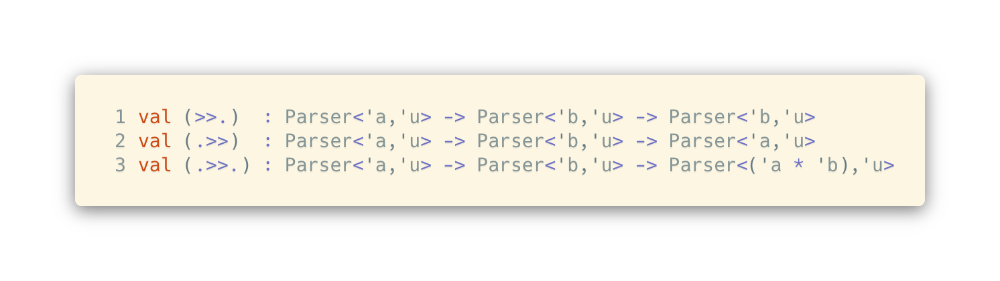
Parsing a rule
Knowing all of this now, we can look at the real code for parsing some parts of a rule:
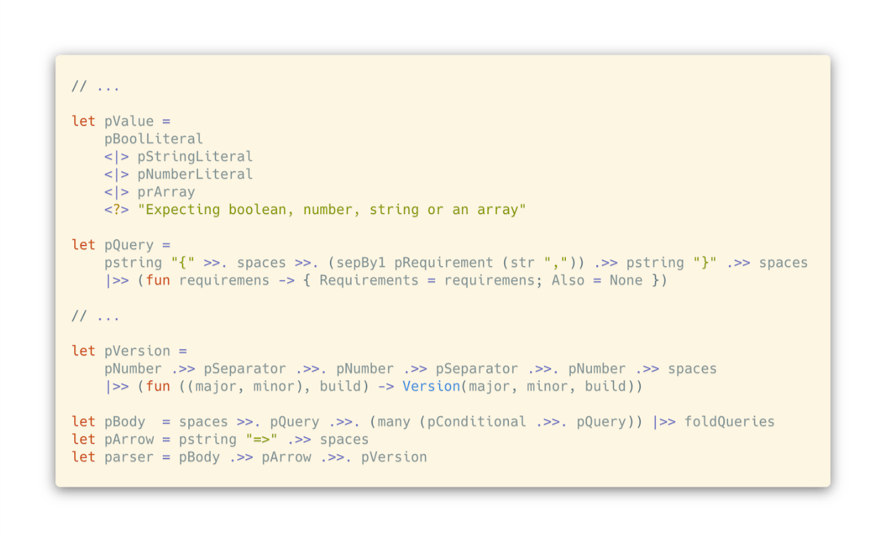
Here we can find all the familiar parsers and combinators, and many more. If we look at our EBNF notation once more, we’ll find similarities with parsers as well.
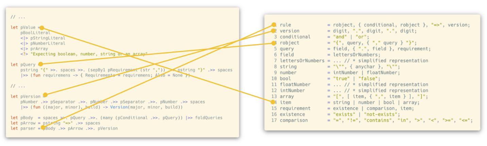
One of the most important things to note is that we don't just parse text into primitive types, but rather we build an abstract syntax tree on the fly.
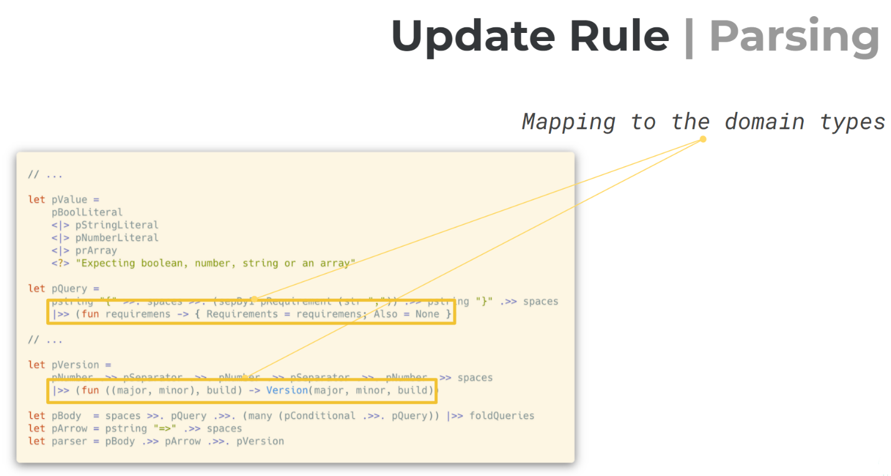
And as an end result, we're getting a clean final function that parses all the text into our bespoke domain model, or returns a nice error explaining why it can't do it.
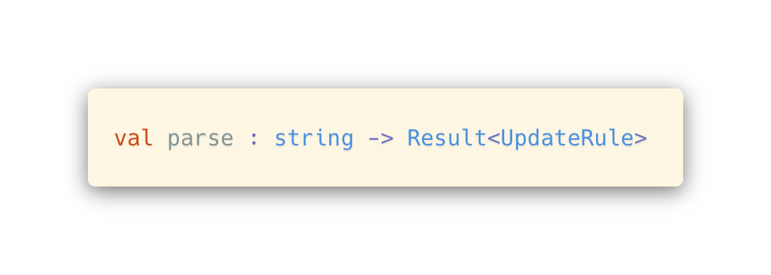
Here’s an example of a rule and its corresponding domain model:
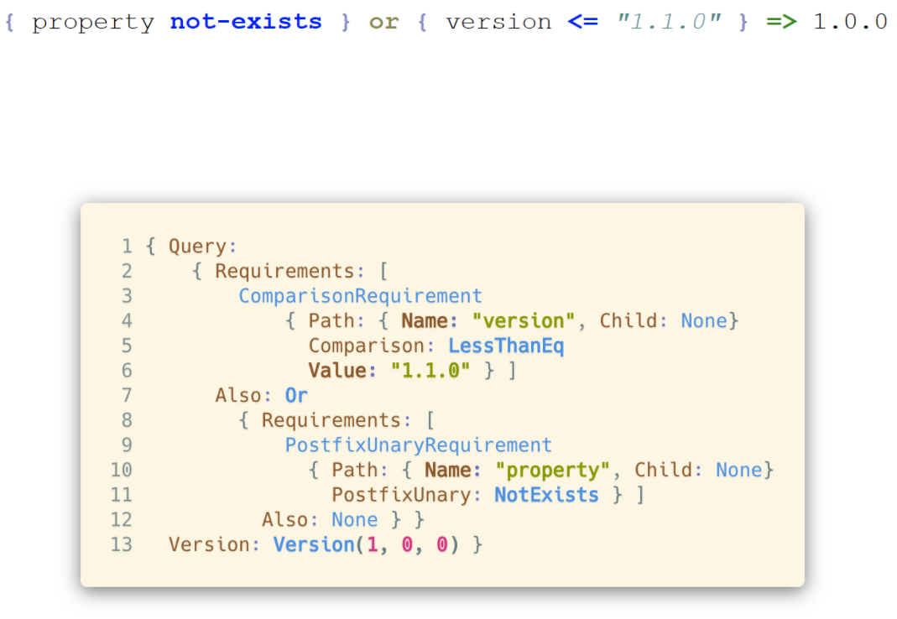
Matching a rule
A parsed rule is quite nice-looking by itself, but we can't do anything useful with it until we can properly interpret the encoded instructions.
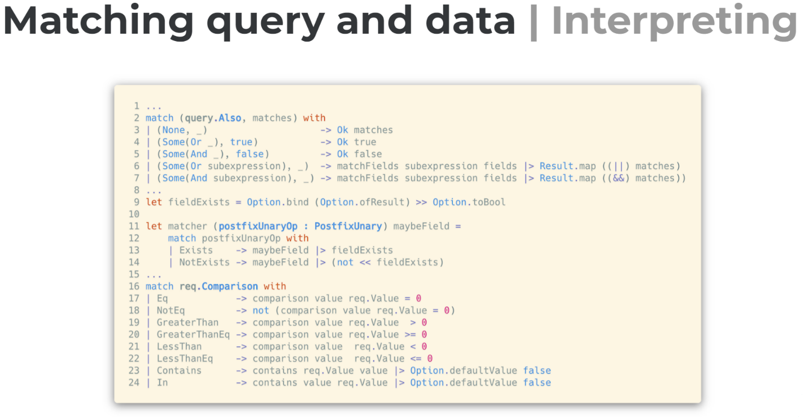
This can be done rather straightforwardly by recursively traversing the AST we built. With algebraic data types, we’re able to precisely encode our rule configuration, match it using the default F# pattern matching techniques, and interpret it in the desired way.
AWS Lambda to the "lazy" engineer’s rescue
Having implemented everything we discussed, the only thing left is to wrap it all up into a web application and conveniently host it somewhere.
Where do you go when you want to spawn a small server for your small service with no configuration and scalability burdens? Correct, you go to the “stateless,” “serverless” building blocks that each of the major service providers has: AWS Lambda, Azure Functions, or Google Cloud Functions. As we're already running a lot of our services on Amazon, it was quite natural for us to look into AWS Lambda first. And surprisingly, AWS has everything needed for F# functions to run: from the .NET runtime to tooling and scaffolding templates.
The overall solution looked something like this:
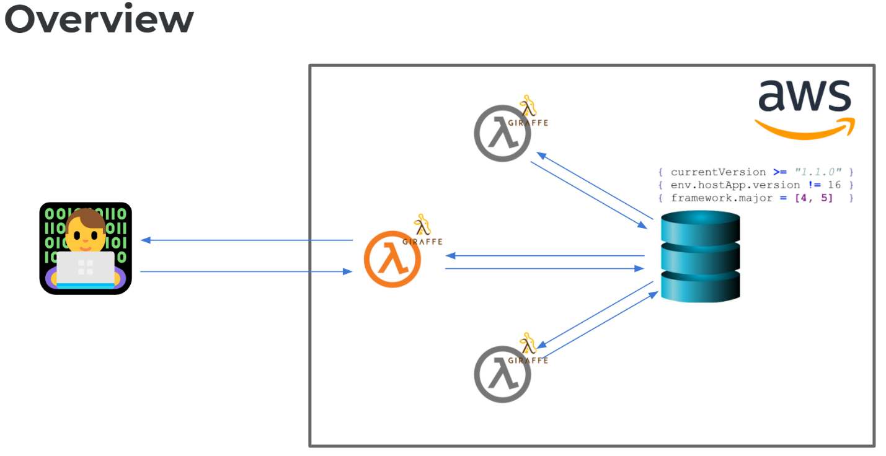
AWS already has F# templates based on the Giraffe web framework with all the necessary boilerplate for query parameters and other AWS service communication configurations built in. So basically, it was just as simple as bundling up the core matching mechanism and deploying this code as a Lambda service. The nice things about Lambda are:
It’s easy to configure and deploy code to it
It has automatic scaling, so there’s no need to worry about your load patterns
Costs are lower since you're just paying for your current load and work actually performed
Nice things about F# and functional programming
Having gone deep into the details of writing our DSL, parser, and interpreter, I’d like to wrap up with a few points about F# and functional programming in general.
If it compiles, it has no bugs. :) Jokes aside, we haven’t found a single production bug since launching this code a year ago.
It’s great for fast prototyping. The initial prototype was developed during the weekend while just exploring an interesting concept.
Even though F# might not top any charts of most-used programming languages, it has a quite nice vendor support, as we saw with AWS Lambda scaffolding.
Functional programming in F# and the rich ecosystem surrounding it opens the door to creative solutions for problems in a reasonable time.